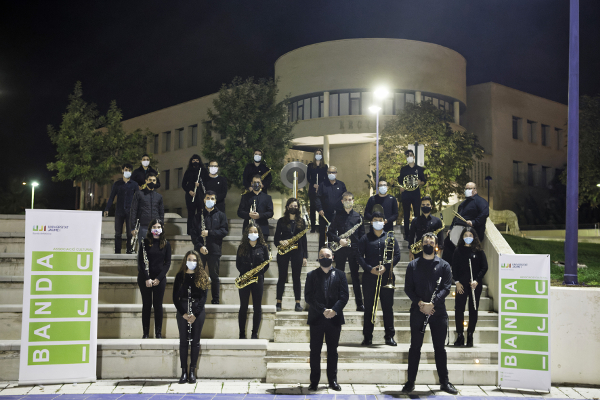

Programa
Prem a les obres per a saber-ne més
-
(1953)
typewriter
de Leroy Anderson (1908-1975)Duració aprox: 3-5min -
(1953)
peer gynt
narradade E. Grieg (1843-1907), transcrip. Daniel Marín, ed Harmonia (1r/4t mov)Duració aprox: 15min -
(2013)
QUINTA SINFONÍA Y MAMBO NÚMERO 5
Beethoven (1770-1827)- Pérez Prado (1916-1989), arr. Rafael VizcainoDuració aprox: 5min -
(2006)
El quijote
narradafantasía sinfónica para narrador y Banda – Ferrer Ferran (1966)Duració aprox: 17min -
(1956)
second waltz
Shostakovich (1906-1975), arr. James CurnowDuració aprox: 4-5min -
(2004)
rapunzel, la història del conte
narradade Bert Appermont (1973)Duració aprox: 10min
El director
Miguel Joaquin Selva Pla
Nascut a Tortosa (Tarragona) el 1979, tot i que és natural de Canet lo Roig, poble de la comarca del Baix Maestrat, al nord de la província de Castelló. Inicia els seus estudis musicals a la Banda de Música del seu poble, començant a tocar el requint amb nou anys i entrant a formar part de la Banda amb nomes onze anys. Va continuar els seus estudis a l’escola de música de la Unió Musical de Traiguera i obtenint el Grau Elemental al Conservatori de Teruel. Posteriorment va desenvolupar estudis del grau professional amb el clarinet al Conservatori Mestre Feliu de Benicarló i al Conservatori Mestre Tàrrega de Castelló. Estudis que va compaginar amb els universitaris de Mestre en Educació Primària que va cursar a la Universitat Jaume I de Castelló.
Ha ampliat la seva formació musical amb diversos cursos de direcció de banda, entre els que destaca el Curs de Direcció de Banda de les Joventuts Musicals de la Vall d’Albaida (València), amb el mestre i director de les bandes municipals de Bilbao i Barcelona José Rafael Pascual Vilaplana. També ha rebut formació en direcció, instrumentació i anàlisi musical de prestigiosos directors i professors com ara Ramón García i Soler, José M. Fayos, Rafael Agulló, Miguel Echegoncelay, Franco Cesarini, Andrea Gasperin i Paulo Martins, entre d’altres. Professionalment, actualment és mestre d’audició i llenguatge del cos de mestres de la Generalitat de Catalunya, i desenvolupa la seva tasca docent als Serveis Educatius del Montsià (Amposta) amb l’atenció a alumnat amb greus dificultats en l’audició, comunicació, llenguatge i parla. A més a més, compagina aquest tasca professional amb la seva passió musical, amb la direcció de la Banda i de l’Escola de Música de l’Agrupació Musical Santa Cecília de Canet lo Roig i a partir de setembre de 2019 com a director de l’Associació Cultural Banda UJI formada per membres de la comunitat universitària de la universitat castellonenca.
També té algunes composicions per a banda, com el seu pasdoble Treset, dedicat a la que és la seua banda i nombrosos arranjaments de música popular per a aquest tipus de formacions.
El narrador
Pròximament us donarem més informació ;)
La Banda
L'Associació Cultural Banda UJI va ser fundada el 2015. Està formada majoritàriament per estudiants universitaris, que poden així mantenir l'activitat musical fora de les seues respectives bandes. Durant aquests anys ha realitzat nombroses actuacions entre les quals destaquen els concerts anuals de Sta. Cecilia i Nadal, així com els del Templet (Ribalta). A més, participa en passacarrers per Castelló juntament amb les altres bandes de la localitat amenitzant les festivitats de la Madalena i Sta.Cecilia entre d'altres. Actualment compta amb una plantilla de 38 músics. El seu president és Carlos Torlà i Miguel Joaquim Selva i Pla n'és director.